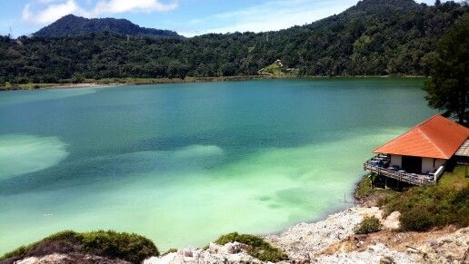

Danau Linow
Danau Linow terletak di Tondano, Sulawesi Utara. Warna airnya bisa berubah-ubah karena kandungan belerang, menciptakan pemandangan yang menawan.
Danau Linow terletak di Tondano, Sulawesi Utara. Warna airnya bisa berubah-ubah karena kandungan belerang, menciptakan pemandangan yang menawan.